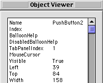
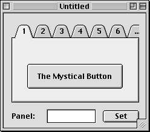
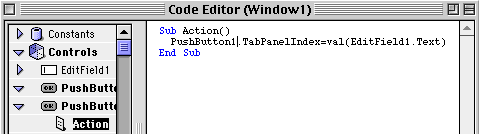
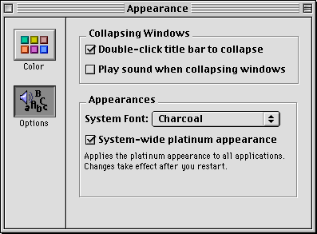
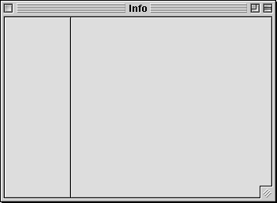
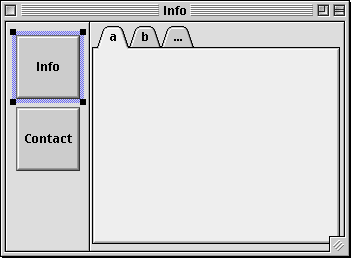
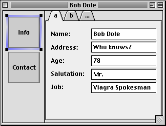
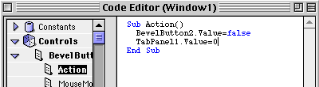
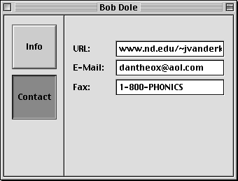

Secrets of the Tabpanel
By Dan Vanderkam
The TabPanel is a great control. It lets you cram a lot more data in one window than you ever could without it. Even Apple likes it! They use it in the Appearance and Sherlock programs.
In RB, the tab panel has had an odd history. It began as an example project, where a two-tabbed panel was drawn on a canvas. One tab had a button in it. The other didn't. Later, it became a control, but it barely qualified as one. It had no events, no properties, and a one line explanation in the reference. Nowadays, it's more of a control, but it's still fairly minimal. It's got some great secrets to it though, and I'll explain two of them in this article...
|
|
The Tab-Jumping Control |
|
Normally, to make a control on a tab, you simply drag it onto the appropriate one by switching to a different tab in the editor. But how does RB remember what item is on each tab? It stores it in a variable that every control has, but that Andrew Barry doesn't want you to know about: TabPanelIndex. If you don't believe me, check out this little screen-shot from the debugger:

If a control is on the first tab of a tabpanel, its TabPanelIndex property is 1. If it's on the second tab, its TabPanelIndex property is 2, and so on.
Knowing that this property exists lets us do two useful things: Let any control find out which panel it's on, and allow a control to move between panels.
As an example, make a window with a tabpanel and a button in the tabpanel. Then, right under the tabpanel, put a label, an editfield, and a button, like so:

Let's assume that the button in the tab panel is named PushButton1, and the Set button is named PushButton2. In the Set button's Action event, put this code:

Now, run the program, and try a variety of values for the tab. It will switch panels whenever you click the Set button.
|
|
Tabs, but no panel |
|
Like I said, tab panels are great. However, there is another way of doing tabs that's often better. Apple used it in the Mac OS 8.0/8.1 Appearance Control Panel, which looks like this:

Clicking on a button on the left side changes the content on the right–just like a TabPanel. However, this setup allowed Apple to put graphics and text in a different spot on the window–to the left of the content. It certainly looks better this way than it would with tabs!
However, doing this in RB might seem rather hard. You could make all the controls, and have the buttons move them around. That would simulate this setup. You could also use their visibility. However, these methods are extremely awkward. Wouldn't it be nice if you could use the content-switching abilities of the TabPanel, but without the tabs?
Would I have said that if you couldn't? Probably not. As the title may have told you, it is possible, and it's darned easy too. For this example, we'll make something that looks like the Appearance Control Panel that will display records on people. Specifically, good old Bob Dole. (Hey, he was on the Simpsons last night–I HAVE to use him!)
To start off with, let's make a new window, and put two Placard controls in it. One for the buttons, and one for the content. Like so:

Now, since we'll have two panes, let's make two bevelbuttons (be sure to set their bevel to normal, and ButtonType to Sticky). Put the captions "Info" and "Contact" on them. Then, make a two paned tabpanel in the placard to the right. Your window should now look like this:

Now, we'll put some controls into the tabpanel. You can actually put in whatever you feel like putting in for this example, but I'll be using several EditFields and StaticText controls to add Name, Address, Age, Salutation, Job, URL, e-mail, and fax fields. If you're going to follow what I'm doing, the first tab in the tabpanel should look like this (comments about Bob Dole are optional):

Just add URL, e-mail, and fax fields to the second tab. Now, we've got this completely set up.
If we ran the example now, we'd just have a normal tabpanel, and two buttons that did nothing on the left. But we want the buttons on the left to behave like tabs. As you may have guessed, that's the next step!
First off, we'll do something that may seem rather bizarre. Select the TabPanel, and set its visible property to false. You'd think that this would also make all the controls inside the TabPanel invisible too, but it doesn't! This behavior is odd, but it's darned useful too.
Now, open up the code editor for the top button. Put in this code:

The first line makes sure that if this button is down, the other button is up. Normally, a sticky button goes down when you click it, and stays down, even if you click it again. Setting the other bevelbutton's value to false pops it back up again.
The second line does the most important thing though. It uses the TabPanel's Value property to make the first (Pane #0) section active. That's all there is to it!
Now, put the same thing in for the second BevelButton, but change "BevelButton2.Value" to "BevelButton1.Value", and change "TabPanel1.Value=0" to "TabPanel1.Value=1". Nothing to it!
Here's a look at the finished app running:

Now, you've got a nice clean interface, and it took a whopping four lines of code! And, since we used bevelbuttons, we can easily substitute the text for graphics.
I'm sure you've probably thought of a bunch of ways you could use this already. Basically, it works for any window that has a variety of controls that don't all appear at once. Now THAT'S a simple-but-useful tool!